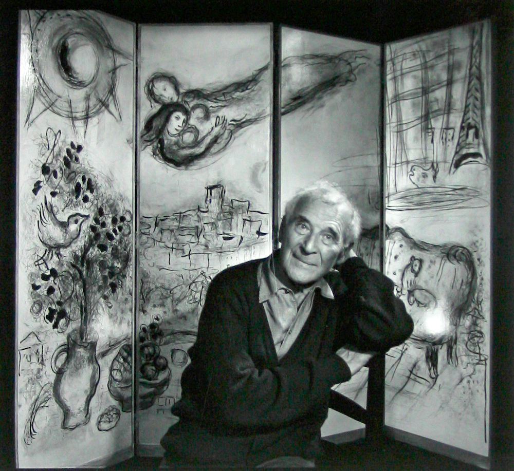
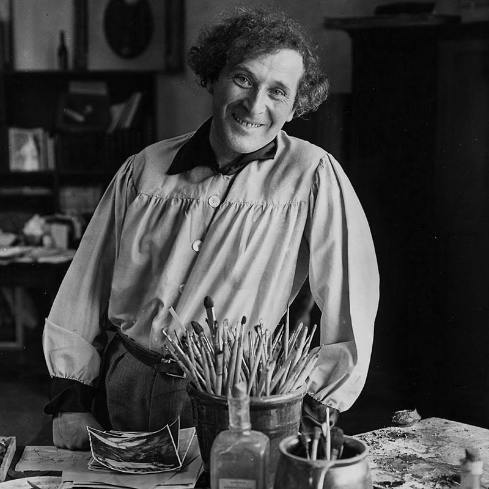
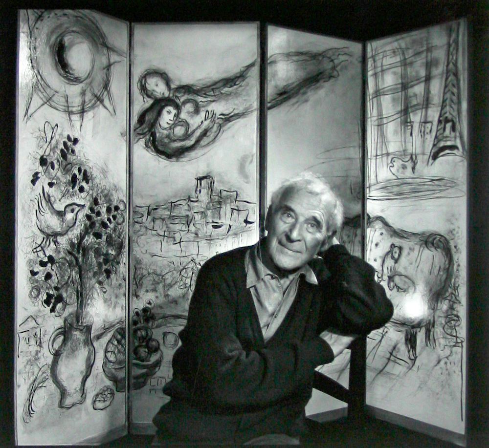
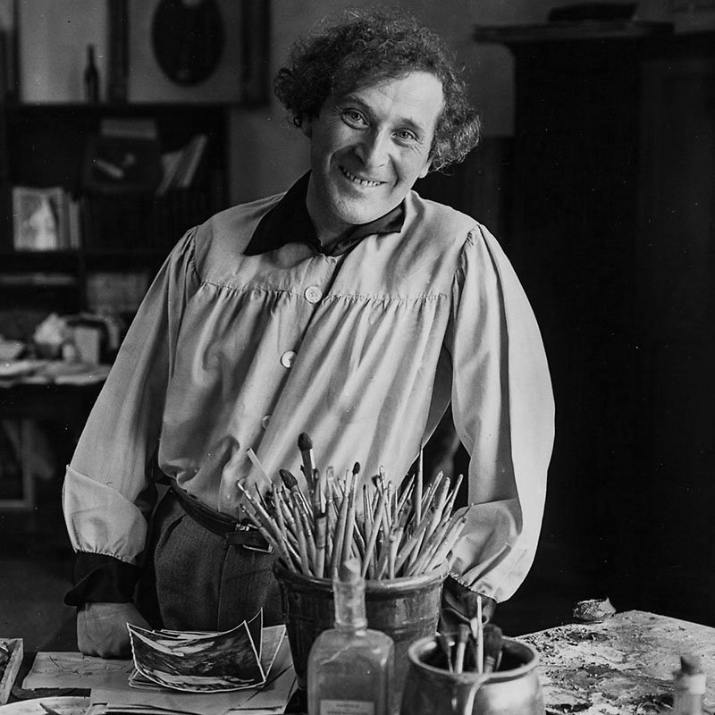

Детство Марка Шагала
Марк Захарович (Мовша Хацкелевич) Шагал появился на свет 24 июня (6 июля) 1887 года в небольшом еврейском местечке Лиозно неподалёку от Витебска. Он был старшим из восьмерых детей в семье Хацкеля Мордуховича Шагала и его жены Фейги-Иты Менделевны Черниной. Отец будущего художника работал в лавке торговца рыбой и, по воспоминаниям Шагала, добывал свой хлеб, перетаскивая огромные бочки, а от одежды его всегда пахло селёдочным рассолом.
Юность Марка Шагала
С 1890 года семья жила в Витебске, где и прошло детство Шагала. Учился он в еврейской религиозной школе-хедере, а после неё – в 1-м Витебском четырёхклассном училище. Быт и традиции еврейской местечковой жизни, впечатления детства и ранней юности Шагал воплощал в живописных сюжетах до конца жизни. Мальчик рано понял, что хочет стать художником, но занятия живописью были не по нраву его родителям и родственникам: отец предпочёл бы, чтобы сын выбрал более надёжную в плане доходов профессию, а некоторые религиозные дядюшки и тётушки даже боялись, что он напишет их портрет, считая это грехом. Первые уроки рисования юноша брал у Иегуды (Юделя) Пэна, известного еврейского художника из Витебска. Уже тогда стало ясно, что живописная манера Шагала совершенно не похожа на академическую. В 1907 году, после года занятий, Шагал отправился в столицу. В Санкт-Петербурге он два года посещал школу Н.К. Рериха, а после стал учеником Л.С. Бакста.
 


